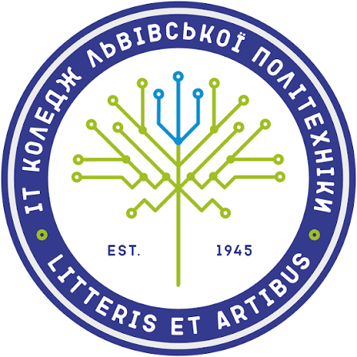

Логотип коледжу

Про канал
Ласкаво просимо на вебресурс, присвячений подкастам та відеоматеріалам нашого коледжу. Тут публікуються трансляції про навчання, спеціальності та освітні програми для абітурієнтів.
Презентаційне відео коледжу (.mp4)
Аудіозапис подкасту (.mp3)
Презентація спеціальностей коледжу на YouTube
Перегляньте офіційне відео про навчальні блоки, дисципліни (Паскаль, Java, HTML, JS) та зміст навчання нашого коледжу на платформі YouTube.
Карта: Університети та коледжі Львова (Варіант 1)
Для ознайомлення з точним розташуванням ВСП "Фаховий коледж інформаційних технологій НУ Львівська політехніка" на картах міста Львова, перейдіть за валідованим інтерактивним посиланням.